The gallery examples and the how-to and tutorial notebooks looked like the classic style because they pinned a palette and limits (cmap=, vmin=, vmax=) and created their own figure with plt.subplots and ax=, which leaves the figure white. They now let the style set the palette, scale and colorbar, and apply the style to their figures with get_style().apply(fig), so a copied snippet gives the same figure. Every figure of the 28 examples and the 19 notebooks has the surface of the default style.
Two causes, found by rendering plot_flow_cartogram.py on main (figure facecolor #ffffff, palette RdYlGn_r, linear scale):
cmap=, vmin or vmax in the call wins over the style, so the palette and the log scale of the style never applied (14 examples passed cmap=, 6 passed vmin).ax= gives that axes the surface of the style but not the figure that the caller created; with the axes turned off the white figure showed (about 20 examples).After the change the figure of every example and of every notebook cell has the surface #eef1f4 (checked by running all 28 examples and all 19 notebooks; on main the figures of the notebooks were white).
| palettes | the pins of the examples that draw a carto-flow result are removed (the explicit ones that carry a meaning stay) |
| figures | get_style().apply(fig) after every plt.subplots, with from carto_flow import get_style |
| notebooks | get_style().apply(fig) after the 51 plt.subplots calls of 18 notebooks (with the import); the pins of the carto-flow plots removed; plain GeoDataFrame plots of the original geography use cmap=get_style().colormap("sequential"); the JSON of the notebooks is edited line by line, not re-serialized |
| left explicit | meaningful palettes (election colors, category dictionaries, dot density), the covid and population-evolution encodings, the error colormap with caps of the multiresolution tutorial, the benchmark charts of the performance page, lightblue symbols of the adjacency example |
All 28 examples and 19 notebooks run; the figure facecolor of each is the surface of the default style; the docs build (which executes the notebooks) runs in CI.
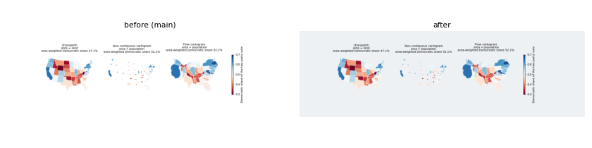
The palette is kept on purpose (blue for Democratic, red for Republican); the figure has the surface.
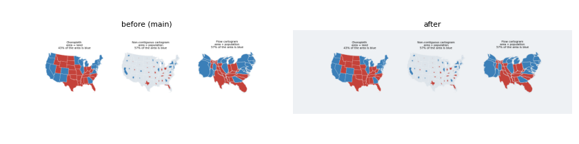
The same for the winner colors.
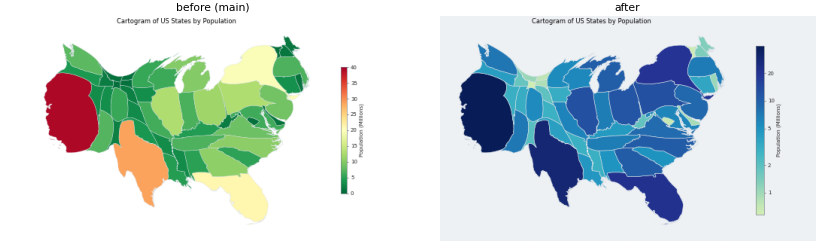
Flow cartogram: no pinned palette or limits, log scale and style colorbar.
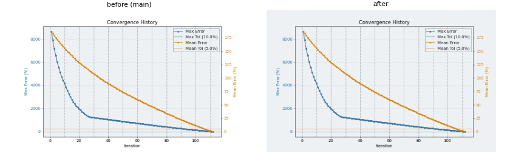
Surface only.
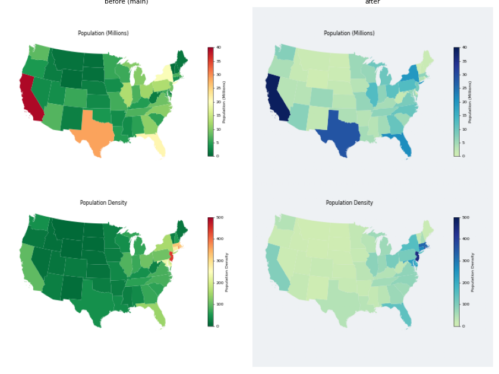
Tutorial: the original map and the cartogram with the sequential palette of the style.
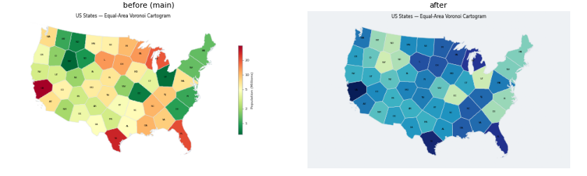
Tutorial: the Voronoi cartogram without the pinned palette and colorbar.
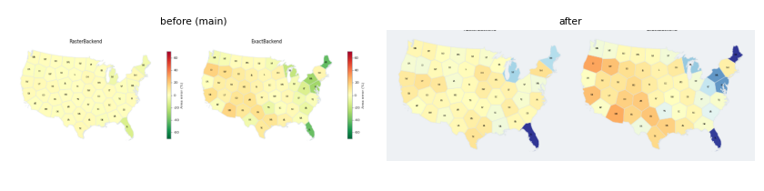
How-to: the area error of the two backends on the diverging palette of the style, without the fixed limits.
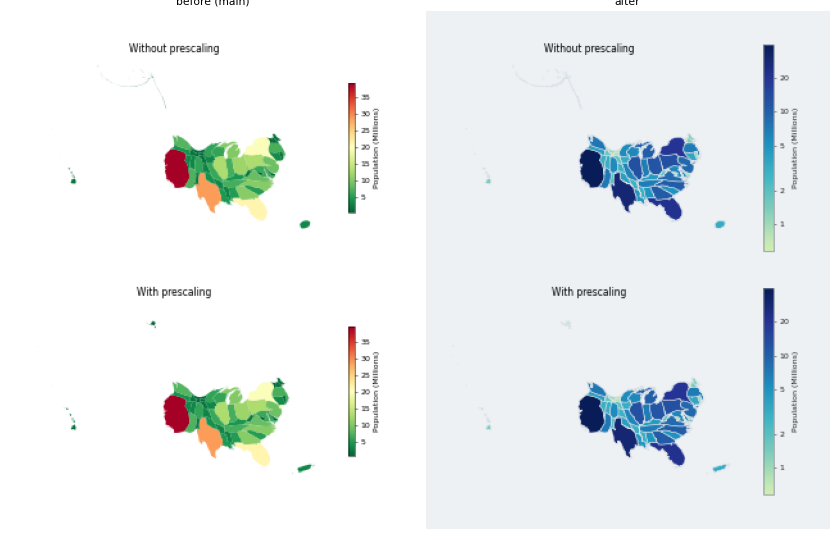
How-to: the results of the prescaling comparison, plotted with Cartogram.plot instead of to_geodataframe().plot.
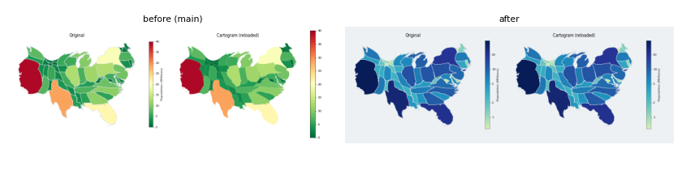
How-to: the original and the reloaded cartogram, plotted with Cartogram.plot.
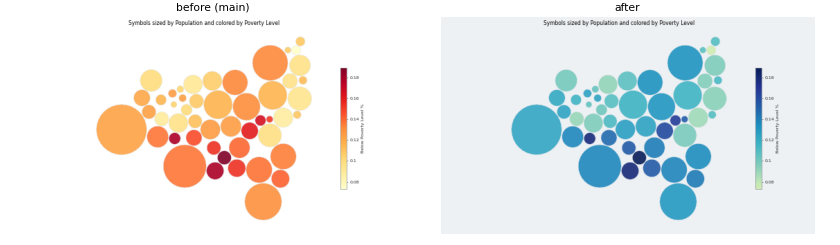
How-to: the symbols without the pinned YlOrRd.
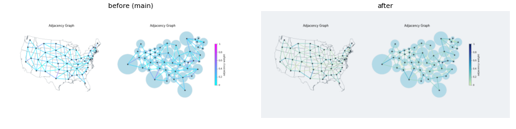
The links take the sequential palette.
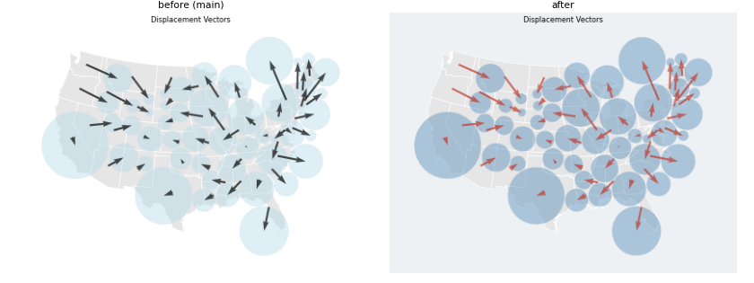
The arrows take the accent color.
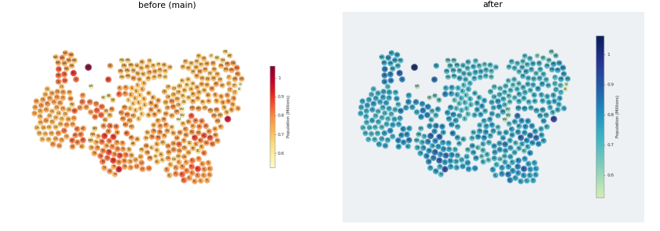
Symbols colored with the sequential palette of the style.
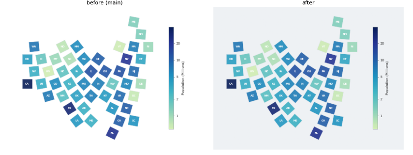
Surface only (the palette was not pinned).
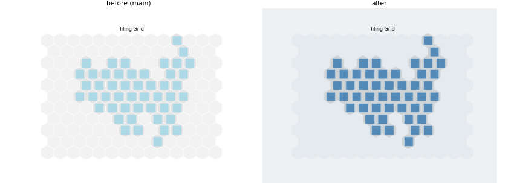
The tiling uses the reference layer and the stroke color of the style.
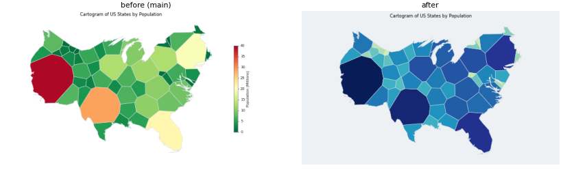
Voronoi cartogram.
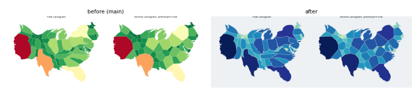
The two cartograms are drawn with their own plot methods instead of geopandas.